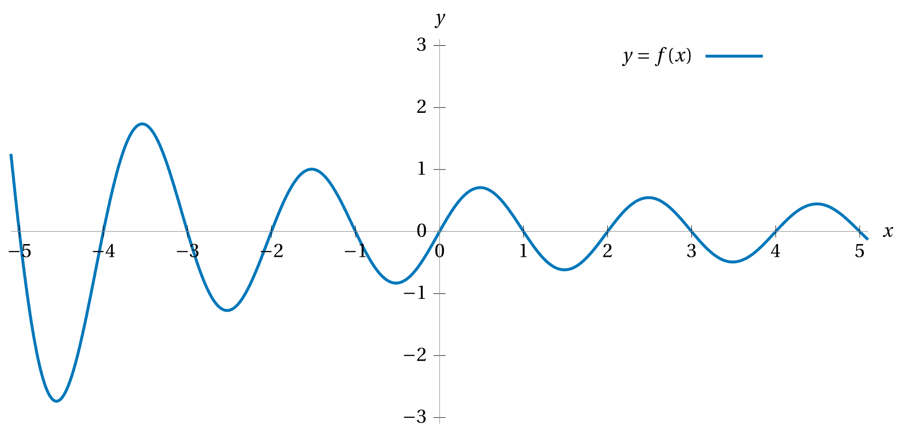

Without appealing to technology,
describe how the graph of
\(g(x) = \sqrt{x-1}+3\)
compares to the graph of \(f(x) = \sqrt{x}.\)
Let \(\gamma(x) = x^{3/2}\)
and consider its graph \(y = \gamma(x).\)
Suppose we want to shift this graph five to the left;
how would the formula for \(\gamma\) have to change
to cause this transformation of the graph?
Below is the graph of some function \(f(x).\)
Based on this graph, sketch the graph
of each of the following three functions
on the same set of axes.
\(\displaystyle y = f(x) - 2 \)
\(\displaystyle y = 2f(x) \)
\(\displaystyle y = f\biggl(x+\frac{3}{2}\biggr) \)

For these definitions
of functions \(f\) and \(g,\)
either write out concise formulas for each
of the following new functions,
or evaluate the new function as indicated.
\[
f(x) = x^2-4x
\qquad \qquad \qquad
g(x) = \frac{2}{x}
\]